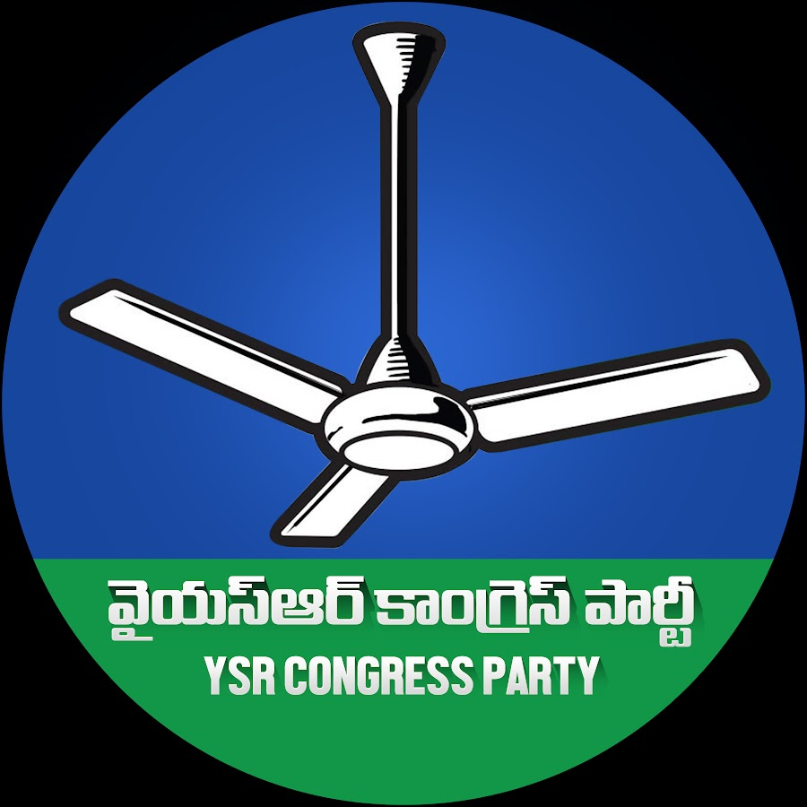
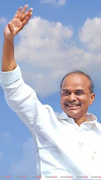
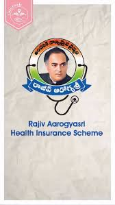

He returned to state politics and won the 1999 assembly elections from the same Pulivendula constituency and served as leader of opposition in Andhra Pradesh State Assembly from 1999 to 2004.[11][17] Always clad in dhoti in Andhra style, YSR is an expert in rural economy.[18] In 2003, he undertook a three-month-long padayatra covering 1,500 kilometres (930 mi) in 60 days across 11 districts of Andhra Pradesh as a part of his election campaign.[19] Lead the state-wide campaign yatras, he mobilised people's support in these marches for the party in the face of a hi-tech campaign and media blitzkrieg by the ruling party. It was now or never for Reddy.[20] He had declared that he would quit politics if the Congress failed to return to power in the state. His close aides said he always had the ambition of becoming chief minister.[20] In a protest against assassination plot for then Chief Minister of Andhra Pradesh Nara Chandrababu Naidu, He underscored the point that the State bureaucracy had become complacent.
Reddy led the congress party to victory in the 2004 assembly election and served as the 14th Chief Minister of Andhra Pradesh from 2004 to 2009. During his tenure as Chief Minister, he enacted schemes to provide free electricity for farmers, a health insurance program for rural people living below the poverty line,[22] a free public ambulance service,[23] low interest loans to rural women, subsidised housing for the rural poor,[24] subsidized rice,[25] reimbursement of college fees for underprivileged and reservation for minorities.[26] His tenure also saw the weakening of the violent extremist left-wing Naxalite movement that was rampant in the state.[11] He commenced the Jala Yagnam project to irrigate 4,000,000 hectares (10,000,000 acres) of land through the construction of major, medium and minor irrigation projects.
Apart from the last three 5 year plans, which advocated PPP in health-care, other factors led to starting of Aarogyasri in AP. Jayati Ghosh committee[28] on the farmer's suicide in AP brought out the precarious health conditions due to economic distress in the agriculture sector and suggested free care of the poor by the private hospitals, which have benefitted from state subsidies. These recommendations of the report became convenient support to him, being a medical doctor himself, to provide this innovative health-care scheme for all, through corporate hospitals. Earlier CM relief fund had spent Rs. 168.52 crores to help 55,362 below the poverty line (BPL) patients needing hospitalization. Simultaneously, Dalit movement highlighted problems of young children with heart ailments in the state. Soon, He announced free heart surgeries for these children, by August 2006, 4600 children were operated under the CM relief fund. This magnanimous gesture set the stage for Aarogyasri scheme.

He led the congress party to victory in the 2009 assembly election, winning 156 seats in the assembly.[29] He became the first incumbent chief minister from Congress since 1969 (after Kasu Brahmananda Reddy in 1969) to win and was sworn in as the 15th Chief Minister of Andhra Pradesh on 20 May 2009.[30][31][32] He termed the results the "people's victory" and vowed to continue welfare and development schemes, especially construction of irrigation project'